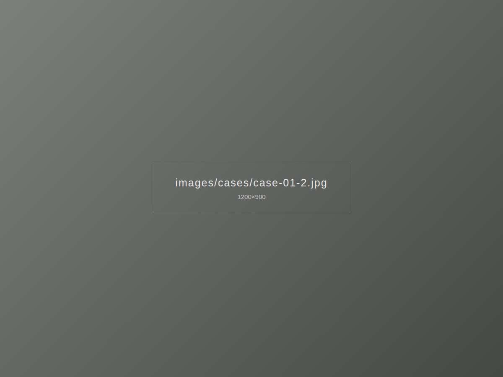
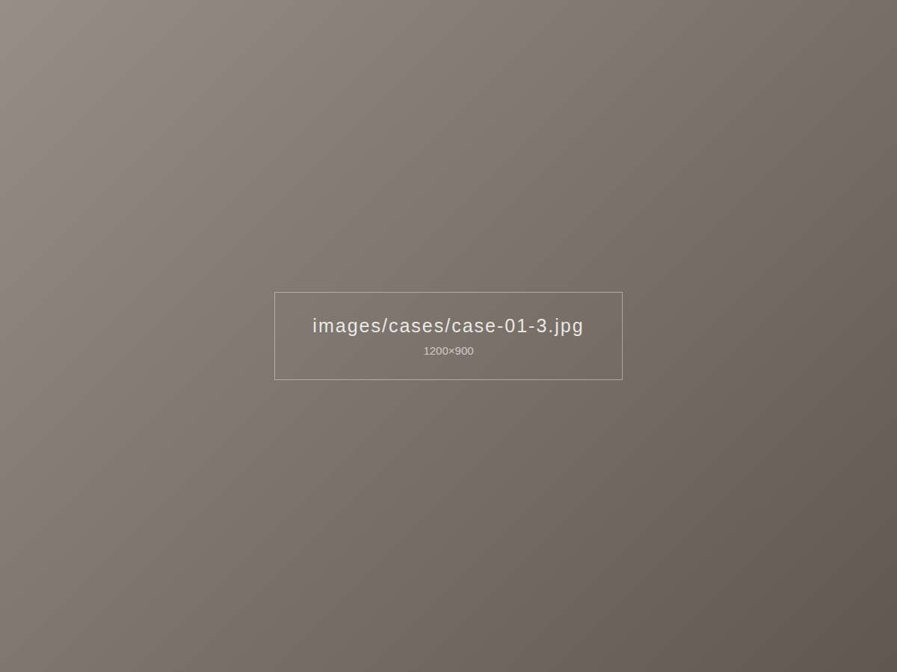

이런 고민이 있었어요
남향 통창이라 오후가 되면 거실 바닥까지 햇빛이 깊게 들어오고, 소파에 앉으면 눈이 부신 집이었습니다. 그렇다고 두꺼운 커튼으로 막아 버리면 넓은 창의 장점이 사라지는 상황이었어요.



이렇게 해결했어요
빛을 막기보다 걸러 주는 쪽으로 방향을 잡았습니다. 낮에는 쉬폰 속커튼만 쳐서 바깥 풍경을 흐리게 남기고, 저녁에는 결이 굵은 린넨을 겹쳐 아늑하게 닫을 수 있도록 이중 레일로 구성했습니다. 통창 폭이 넓어 주름이 고르게 떨어지도록 나비주름 간격을 촘촘하게 잡았어요.
시공 포인트
- 바닥에서 1cm 띄운 기장으로 청소기가 지나가도 끌리지 않게
- 벽 끝까지 레일을 연장해 커튼을 열었을 때 창을 가리지 않게
- 오트밀 톤 린넨으로 원목 바닥과 색을 맞춤
비슷한 집이라면
서울 강남구 지역, 비슷한 구조의 집이라면 이 사례 사진을 보여주시며 상담받으셔도 좋아요.
린넨 커튼 자세히 보기 · 강남 시공 안내